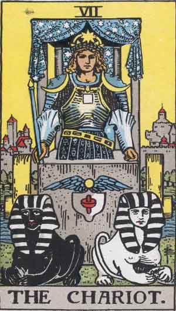

VII The Chariot
An erect and princely figure carrying a drawn sword and corresponding, broadly speaking, to the traditional description which I have given in the first part. On the shoulders of the victorious hero are supposed to be the Urim and Thummim. He has led captivity captive; he is conquest on all planes--in the mind, in science, in progress, in certain trials of initiation. He has thus replied to the sphinx, and it is on this account that I have accepted the variation of Eliphas Levi; two sphinxes thus draw his chariot. He is above all things triumph in the mind.
It is to be understood for this reason (a) that the question of the sphinx is concerned with a Mystery of Nature and not of the world of Grace, to which the charioteer could offer no answer; (b) that the planes of his conquest are manifest or external and not within himself; (c) that the liberation which he effects may leave himself in the bondage of the logical understanding; (d) that the tests of initiation through which he has passed in triumph are to be understood physically or rationally; and (e) that if he came to the pillars of that Temple between which the High Priestess is seated, he could not open the scroll called Tora, nor if she questioned him could he answer. He is not hereditary royalty and he is not priesthood.